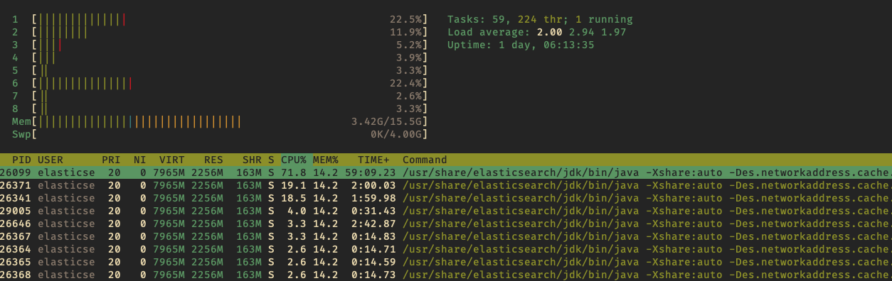

Documentation
Resources and useful guides for using the ELK stack on the VM.
The environment used for the ELK stack project is a virtual machine running CentOS 7. The available services on the VM can be accessed from the cards below.
Slides and reports for any project and events that take place in the Department of Computational Physics and Information Theory @NIPNE-HH are periodically saved into the Resource Storage Space.

Root access is granted while using the VM, which assures a proper administration (e.g. installing latest updates, fixing any issues that affect the services, monitoring the firewall, renewing SSL certificates
and so on).
SSL Certificate must be renewed periodically: certbot
VM: System details
Linux elk.nipne.ro 3.10.0-1127.19.1.el7.x86_64 #1 SMP x86_64 x86_64 x86_64 GNU/Linux

Development services
Python
[root@elk robert.poenaru]# python3 --version
Python 3.6.8
NodeJS
[root@elk robert.poenaru]# node -v
v10.17.0
C++
[root@elk robert.poenaru]# g++ -v
Using built-in specs.
COLLECT_GCC=g++
COLLECT_LTO_WRAPPER=/opt/rh/devtoolset-8/root/usr/libexec/gcc/x86_64-redhat-linux/8/lto-wrapper
Target: x86_64-redhat-linux
Thread model: posix
gcc version 8.3.1 20190311 (Red Hat 8.3.1-3) (GCC)
Running daemons
There are multiple system services (daemons) that run 24/7 on the background within the virtual machine.
Elasticsearch
[root@elk elk]# systemctl status elasticsearch.service
● elasticsearch.service - Elasticsearch
Loaded: loaded (/usr/lib/systemd/system/elasticsearch.service; enabled; vendor preset: disabled)
Active: active (running) since Wed 2020-10-28 13:57:27 EET; 1 day 4h ago
Docs: https://www.elastic.co
Main PID: 26099 (java)
Tasks: 123
Memory: 2.7G
CGroup: /system.slice/elasticsearch.service
├─26099 /usr/share/elasticsearch/jdk/bin/java -Xshare:auto -Des.networkaddress.cache.ttl=60 -Des.networkaddress.cache.negative...
└─26359 /usr/share/elasticsearch/modules/x-pack-ml/platform/linux-x86_64/bin/controller
Oct 28 13:57:02 elk.nipne.ro systemd[1]: Starting Elasticsearch...
Oct 28 13:57:27 elk.nipne.ro systemd[1]: Started Elasticsearch.
Kibana
[root@elk robert.poenaru]# systemctl status kibana
● kibana.service - Kibana
Loaded: loaded (/etc/systemd/s kibana.service; enabled; v preset: disabled)
Active: active (running) sinc 2020-10-28 15:10:41 EET; 1 day 3h ago
Main PID: 28957 (node)
Tasks: 11
Memory: 569.3M
CGroup: /system.slice/kibana.service
└─28957 /usr/share/kibana/bin/ ./node/bin/node /usr/share kibana/bin/../src/cli
Oct 28 21:53:24 elk.nipne.ro kibana[28957]: {"type":"response","@timestamp":"2020-10-28T19:53:24Z","tags":[],"pid":28957,"method":...":"37.2
Oct 28 21:53:24 elk.nipne.ro kibana[28957]: {"type":"response",
Hint: Some lines were ellipsized, use -l to show in full.
Logstash
[root@elk robert.poenaru]# systemctl status logstash.service
● logstash.service - logstash
Loaded: loaded (/etc/systemd/system/logstash.service; enabled; vendor preset: disabled)
Active: active (running) since Thu 2020-10-29 18:59:15 EET; 6s ago
Main PID: 8556 (java)
Tasks: 24
Memory: 513.1M
CGroup: /system.slice/logstash.service
└─8556 /bin/java -Xms1g -Xmx1g -XX:+UseConcMarkSweepGC -XX:CMSInitiatingOccupancyFraction=75 -XX:+UseCMSInitiatingOccupancyOnl...
Oct 29 18:59:15 elk.nipne.ro systemd[1]: Started logstash.
NGINX
[root@elk robert.poenaru]# systemctl status nginx
● nginx.service - nginx - high performance web server
Loaded: loaded (/usr/lib/systemd/system/nginx.service; disabled; vendor preset: disabled)
Active: active (running) since Wed 2020-10-28 14:53:49 EET; 1 day 4h ago
Docs: http://nginx.org/en/docs/
Process: 28737 ExecStart=/usr/sbin/nginx -c /etc/nginx/nginx.conf (code=exited, status=0/SUCCESS)
Main PID: 28738 (nginx)
Tasks: 9
Memory: 17.1M
CGroup: /system.slice/nginx.service
├─28738 nginx: master process /usr/sbin/nginx -c /etc/nginx/nginx.conf
├─28739 nginx: worker process
├─28740 nginx: worker process
├─28741 nginx: worker process
├─28742 nginx: worker process
├─28743 nginx: worker process
├─28744 nginx: worker process
├─28745 nginx: worker process
└─28746 nginx: worker process
Oct 28 14:53:49 elk.nipne.ro systemd[1]: Starting nginx - high performance web server...
Oct 28 14:53:49 elk.nipne.ro systemd[1]: Started nginx - high performance web server.
Elasticsearch - indices
ES usage can be done within queries even directly from the browser (without needing Kibana's interface). Example that shows all the available indices on the VM can be seen below.
https://elk.nipne.ro/elastic/_cat/indices
green open .monitoring-kibana-7-2020.10.29 3e33DOA6Qyy2DoXPxNwtAw 1 0 9506 0 1.6mb 1.6mb
green open .kibana-event-log-7.9.3-000001 wAPNhRzcTg-B8sCaovn7HQ 1 0 1 0 5.5kb 5.5kb
green open .kibana-event-log-7.9.2-000001 mCIlR_JbSKygdQtnFstTEw 1 0 2 0 10.9kb 10.9kb
green open .kibana-event-log-7.9.1-000002 EyFhDdFvR8Ox3hgZIcOk_Q 1 0 0 0 208b 208b
green open .kibana-event-log-7.9.1-000001 2fWzZfoVToaykhl8NTav7Q 1 0 3 0 16.3kb 16.3kb
green open .reporting-2020-10-18 HfvZ_cCMTVSUtFSWP1awPQ 1 0 1 0 48.6kb 48.6kb
green open .monitoring-es-7-2020.10.29 3RXiR_YbQNW3JIDltTgHwQ 1 0 246897 246633 228.7mb 228.7mb
green open .monitoring-es-7-2020.10.28 -oeKj3sXTcumywItGiwMsw 1 0 330375 184728 151.6mb 151.6mb
green open .reporting-2020-09-27 lbVICO_UQLSycppQzxuh0A 1 0 1 0 53.8kb 53.8kb
green open .monitoring-es-7-2020.10.27 D4edA7x1S2KywOhB4CbCAg 1 0 355083 109060 159.7mb 159.7mb
green open .kibana_task_manager_2 KpMWslT5TO2155z_CC78GA 1 0 3 0 13.1kb 13.1kb
green open .apm-custom-link w73zf2D0R8iSxY9fH9OdpQ 1 0 0 0 208b 208b
green open .kibana_task_manager_1 S8EqNpT3Rv-OtCE350LRcg 1 0 2 0 12.6kb 12.6kb
green open .kibana_task_manager_3 nfT6HtgIRU2yJKMAbiYvTA 1 0 7 5056 679.4kb 679.4kb
green open .apm-agent-configuration MkUArGvjTzeSpYAZhS-v6Q 1 0 0 0 283b 283b
green open .kibana_6 MTI5ZS2gTw2q9tMsCNedvg 1 0 128 27 10.4mb 10.4mb
green open .kibana_5 LUlg6hzBQA-Etp6y9-tAIw 1 0 121 24 10.4mb 10.4mb
green open .kibana_2 oGZo9at4RhSYn_Gsz4MX4g 1 0 33 13 47.9kb 47.9kb
green open .kibana_1 kf2kdiqWS4incduKQ8vxig 1 0 31 9 55.3kb 55.3kb
green open .kibana_4 3koIbTZhTp6dl9IZK9cqlA 1 0 316 114 10.5mb 10.5mb
green open .kibana_3 -WbzZ3HvSMqDzCFx8jqSnQ 1 0 127 5 94.4kb 94.4kb
green open .kibana-event-log-7.8.0-000001 U8oR_1QwRiarOlkNVOTIVQ 1 0 1 0 5.3kb 5.3kb
green open .security-7 JDBuT45bThGOW9Ai-zZvJQ 1 0 42 0 90.7kb 90.7kb
green open .kibana-event-log-7.8.0-000002 n0dF_qKxQjuTcCOWKcmRNA 1 0 0 0 208b 208b
green open .monitoring-es-7-2020.10.26 ZLFd8lf-Rl61YHYibR3gMw 1 0 355044 109101 159.5mb 159.5mb
green open .monitoring-es-7-2020.10.25 86plcJRSRYWD_kkNqYUnuQ 1 0 355085 109142 162.3mb 162.3mb
green open .monitoring-es-7-2020.10.24 TPwq1s_ARri7dwd-ylhyFA 1 0 355084 109060 163.6mb 163.6mb
green open .monitoring-es-7-2020.10.23 OxpnAtNHRbyrLL6dOqYX-w 1 0 355083 109060 162.9mb 162.9mb
yellow open nova-ingest XhoQf78BT9WIGzQ-xBYdqQ 1 1 198385 0 77.6mb 77.6mb
green open .monitoring-kibana-7-2020.10.23 ehSWkv1mSzSOnDB5Olc7tg 1 0 17278 0 2.6mb 2.6mb
green open .monitoring-kibana-7-2020.10.24 gMbIWUntQ2eKxx18aRJEPw 1 0 17278 0 2.6mb 2.6mb
green open .async-search D0SZdBmvSDuSoS8mM_eREw 1 0 0 0 3.3kb 3.3kb
green open .monitoring-kibana-7-2020.10.25 JgdZEfs9TU-A-OGtRC5UDg 1 0 17278 0 2.7mb 2.7mb
green open .monitoring-kibana-7-2020.10.26 8YsKIiPiSZC3s6hObJFD_g 1 0 17278 0 2.7mb 2.7mb
green open .monitoring-kibana-7-2020.10.27 w93GPD_VS9yA3U1Iw3lwGA 1 0 17278 0 2.6mb 2.6mb
green open .kibana-event-log-7.8.0-000003 -xqRdfdHRdqkdoMqoTtnSw 1 0 0 0 208b 208b
green open .kibana-event-log-7.8.0-000004 K9VecNQ8Sg-8W9ox5gwL8Q 1 0 0 0 208b 208b
green open .monitoring-kibana-7-2020.10.28 WkI1W0zrT--0QKahH1BR5A 1 0 14902 0 2.3mb 2.3mb